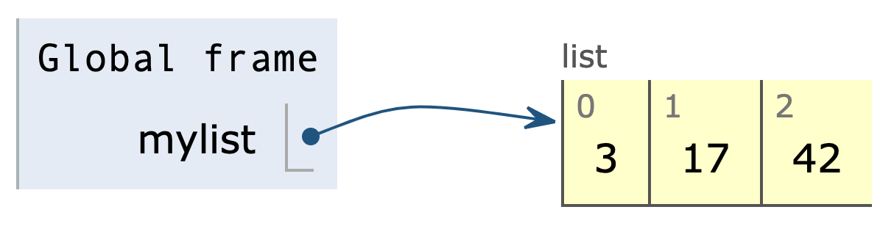

How list is stored
mylist = [3, 17, 42]
Simplified:
How nested list is stored
nested_list = [[3, 17, 42], [10, 20, 30]]
zeros = [0] * 5C = [zeros] * 3C[1][3] = 100print(C)
zeros = [0] * 5C = []for i in range(3):C.append(zeros)C[1][3] = 100print(C)
[[0, 0, 0, 100, 0], [0, 0, 0, 100, 0], [0, 0, 0, 100, 0]]
C = []for i in range(3):C.append([0] * 5)C[1][3] = 100print(C)
Lexicographic order
Given two sequences a=a0,a1,...,an and b=b0,b1,...,bm, if they are not equal, their ordering (whether a<b) is decided as follows:
- If i is the first index where the mismatch occurs, then the order is decided by result of ai<bi
- If there is no mismatch and a is shorter sequence than b, then a must match b at the beginning (i.e. a is subsequence of b starting at index 0). In this case, a<b is true.
Comparing strings
Comparison operators work for strings as well.
The comparison is done alphabetically (i.e. follows order in Character Encoding such as ASCII or Unicode: https://d3vp.github.io/comp202-notes/Lecture-1.1.html#text-in-binary)
1>>> "cat" == "cat"2True3>>> "cat" == "dog"4False5>>> "cat" != "Cat"6True
1# "c" appears before "d" alphabetically2>>> "cat" < "dog"3True45# A-Z appear before a-z alphabetically6>>> "cat" < "Dog"7False
1# The first mismatched letter decides the order2>>> "apple" < "apply"3True45# Shorter string is "minimum" if all letters in it match6>>> "app" < "apple"7True
1# Objects of different types are always not equal2>>> "cat" == 1233False45# inequality is not allowed6# between a number and str7>>> "cat" < 1238TypeError: '<' not supported between instances of 'str' and 'int'
Comparing sequences — lists & tuples
For comparing sequences like lists and tuples, lexicographic order is used — comparing items at same index from beginning to end.
1>>> [10, 20, 30] < [10, 25, 30]2True34# Here: "banana" < "orange" decides the order5>>> ["apple", "banana"] < ["apple", "orange"]6True7# Here: "app" < "apple" decides the order8>>> ["apple", "banana"] < ["app", "orange"]9False1011# Comparison tuples works the same way as lists12>>> (1, 1, 3) < (1, 2, 3)13True
1# Shorter sequence is "minimum" if all items in it match2>>> [1, 2] < [1, 2, 3]3True4>>> (10, 15) < (10, 15, 20)5True67>>> [1, 5] < [1, 2, 3]8False
Sorting a list using sort method
1# list.sort() :2# Sorts the list "in place" i.e. list will be modified.3# Returns None.4# The list is sorted in ascending order.56grades = [90, 70, 60.5, 70, 80]7grades.sort()8print(grades) # [60.5, 70, 70, 80, 90]91011grades.sort(reverse=True) # descending order12print(grades) # [90, 80, 70, 70, 60.5]
1grades = [90, 70, 60.5, 70, 80, "A"]2grades.sort()3# TypeError: '<' not supported between instances of 'str' and 'int'456# Works with strings as well7fruits = ["banana", "orange", "apple"]8fruits.sort()9print(fruits) # ['apple', 'banana', 'orange']
sorted function
1# sorted(iterable):2# Return a new list containing all items from3# the iterable in ascending order.4# If any items cannnot be compared to each other, TypeError occurs.56grades = [90, 70, 60.5, 70, 80]7sorted_grades = sorted(grades)8print(sorted_grades) # [60.5, 70, 70, 80, 90]9print(grades) # [90, 70, 60.5, 70, 80]1011# Sort in descending order12sorted_grades = sorted(grades, reverse=True)13print(sorted_grades) # [90, 80, 70, 70, 60.5]
1# string is iterable2word = "pineapple"3sorted_letters = sorted(word)4print(sorted_letters)5# ['a', 'e', 'e', 'i', 'l', 'n', 'p', 'p', 'p']678# set is iterable9fruits = {"banana", "orange", "apple"}10sorted_fruits = sorted(fruits)11print(sorted_fruits) # ['apple', 'banana', 'orange']
1# dictionary is considered as an iterable of its keys2inventory = {"sofa": 5, "table": 10, "chair": 20, "mattress": 5}3sorted_names = sorted(inventory)4print(sorted_names) # ['chair', 'mattress', 'sofa', 'table']56# same as above7sorted_names = sorted(inventory.keys())8print(sorted_names) # ['chair', 'mattress', 'sofa', 'table']910# iterable of values in the dictionary11sorted_counts = sorted(inventory.values())12print(sorted_counts) # [5, 5, 10, 20]
1points = [(4, 10, 9), (1, 1, 3), (7, 4, 11)]23print(min(points)) # (1, 1, 3)45print(max(points)) # (7, 4, 11)67print(sorted(points))8# [(1, 1, 3), (4, 10, 9), (7, 4, 11)]
enumerate function
1mylist = [10, 50, -3.14, 5]2print(enumerate(mylist))3# <enumerate object at 0x10e327100>45# enumerate creates an iterable of tuples (index, element),6# which we convert to list7list_of_tuples = list(enumerate(mylist))8print(list_of_tuples)9# [(0, 10), (1, 50), (2, -3.14), (3, 5)]
1mylist = [10, 50, -3.14, 5]23for i in range(len(mylist)):4 num = mylist[i]5 print(i, num)
1mylist = [10, 50, -3.14, 5]23for i, num in enumerate(mylist):4 print(i, num)
Writing & importing modules
- What are modules exactly?
- A module is simply a Python file containing definitions and statements.
- Every .py file is a module. The name of the module is the name of the file.
- Name of a Python file (module) must follow same rules as variable names.
- Module names can only start with letters a-z, A-Z or an underscore and must only contain these letters, digits and underscores.
Download module-files.zip from Ed Lessons. It contains geometry.py and geometry_tester.py
In geometry_tester.py file, we import and use the functions defined in the module geometry:
1# Import functions from the module2from geometry import euclidean_distance, sine34# Call the sine function5print(sine(90))67dist = euclidean_distance((1, 1), (2, 3)) # tuples8print(dist) # 2.23606797749979
Some observations
- When we import a module, all code inside that module is executed.
- Add some statement such as print("hello") in geometry module outside the functions. Then,
- Run the geometry.py as the main program
- Run another program which imports the module geometry.
Running a file as main program vs importing it
- Sometimes, we may want to run some code only when a Python file is executed directly as main program but not when it is imported as a module.
- For example, suppose we want the following test cases in geometry.py
1print(sine(-90))2print(sine(180))
- How to make sure the test cases do not execute when geometry is imported as a module?
__name__
- __name__ is a special variable that the interpreter initializes whenever it executes a file.
- When a module is executed, the interpreter does the following:
- sets the value of __name__ for that module using the filename
- executes all the code in the module.
- Each module has its own __name__ variable.
- Add print(__name__) in geometry.py and import geometry module in another program.
"__main__"
- When we execute a file as the main program, then the variable __name__ is set to be "__main__"
- Run geometry.py directly and see what value of __name__ is printed.
How to not execute code in a module when it is imported
Add the following at the end of the file geometry.py:
1if __name__ == "__main__":2 # Run the following code only when this file is3 # executed as main program but not when it is imported4 print("hello from geometry!")5 print(sine(-90))6 print(sine(180))
How to work with a file in Python
A file is a sequence of characters or bytes stored on a storage device such as a hard drive.
- Open the file using the built-in function open()
- Read data from the file or write data into the file
- Close the file
Opening a file with open()
Built-in function open(filename, mode):
- filename (str): name of the file to read (if the file is in the current directory) or full path to the file.
- mode (str): 'r' for reading, 'w' for writing, 'a' for appending. If this argument is omitted, it defaults to 'r'
- Returns: a file object which allows reading from/writing to the file.
1filename = "quotes.txt"2fobj = open(filename, "r") # mode "r" for reading
Reading a file with read() method of file object
File objects have a method read(size) that takes one optional argument:
- size: the number of characters to read from the file
- If omitted, the entire file will be read.
- Returns: a string containing the characters in the file
Closing a file with close() method of file object
- close() method takes no argument and returns nothing. It closes the file associated with the file object
For the following example, download the files from Ed Lessons and keep them in the same directory as the python program.
1filename = "quotes.txt"2fobj = open(filename, "r") # mode "r" for reading34file_content = fobj.read() # read whole file as a string5print(file_content) # print the string67fobj.close() # close the file
Why close a file?
Closing the file is important for many reasons
- Operating System (e.g Windows, Mac OS) may lock the file until it is closed (Other programs may not use the file as long as it is open)
- Too many open files may cause your program/computer to slow down
Reading a file line by line
- The file object returned by open() is an iterable that can produce a sequence of lines in the file. So we can use it in a for loop.
- Each line will have a trailing newline ("\n") character.
1filename = "quotes.txt"2fobj = open(filename, "r")34for line in fobj: # file object is iterable5 line = line.rstrip("\n") # Remove trailing "\n" character6 print(line)78fobj.close()
Reading a file as list of lines
1filename = "quotes.txt"2fobj = open(filename, "r")34# Read whole file, split into lines and return a list of lines5all_lines = fobj.readlines()67# Each line will have a trailing newline character "\n"89print(all_lines)1011fobj.close()
Writing text to a file in Python
To write to a file in Python:
- Open the file with open() using mode 'w' for “write.”
- If the file does not exist, it will be created.
- If the file exists, it will be deleted and replaced with an empty file.
- Call write(s) method on the file object to write the string s into the file.
- Close the file.
1filename = "grades.txt"2fobj = open(filename, "w") # mode "w" for writing34fobj.write("Name,A1,A2,A3\n") # write line to file5fobj.write("Student-A,90,80,100\n") # write another line6fobj.write("Student-B,100,90,100\n") # write another line78fobj.close()
Appending text to a file in Python
Appending means adding text to the end of a file without changing/deleting text already present in the file.
- Open the file with open() using mode 'a' for “append.”
- If the file does not exist, it will be created.
- If the file exists, it is NOT deleted.
- Call write(s) method on the file object, to write the string s at the end of the file.
- Close the file.
1filename = "grades.txt"2fobj = open(filename, "a") # mode "a" for appending34fobj.write("Student-C,85,90,97\n")5fobj.write("Student-D,95,90,97\n")67fobj.close()
Time for some problems on Ed Lessons.